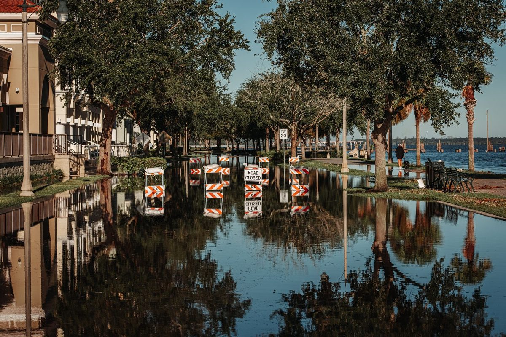

Flood Damage Restoration in Plano, TX Storm & Flash Flood Cleanup
Storm water pouring into your garage? Yard runoff flooding through back doors near Spring Creek? Flash flood water is Category 3 contamination, it carries mud, bacteria, sewage overflow and chemical runoff that make every porous material it touches unsalvageable. Our IICRC certified crew is dispatched to your Plano address 24/7 with truck-mounted extraction, PPE, antimicrobial treatment and structural drying. Call (214) 833-4785 now.
📞 (214) 833-4785, 24/7 Flood Damage Emergency, Crew Dispatched Immediately
- ✓ Pump-out & mud removal
- ✓ Category 3 sanitization
- ✓ Storm tarping & board-up
☎ Call Now: 24/7 Flood Cleanup Crew Contact Us →
After FloodingWhat Should I Do After Flooding in My Plano, TX Home?
Do not walk through flood water inside your home without rubber boots, flood water contains bacteria, sewage overflow and chemical runoff classified as Category 3 contamination under IICRC standards. Cut power to affected areas at the breaker if you can reach it safely. Do not attempt to save carpet, pad, mattresses or upholstered furniture that flood water contacted, these porous materials cannot be sanitized and must be removed. Call (214) 833-4785 for 24/7 emergency flood damage restoration with PPE-equipped technicians, truck-mounted extraction and full antimicrobial treatment.
Why Floodwater Is Always Treated as Category 3
Floodwater from outside is classified as Category 3, the most contaminated level. It can carry sewage overflow, lawn chemicals, animal waste, fuel and soil bacteria. That changes the cleanup:
Porous materials (carpet, pad, drywall, insulation) that touched floodwater are removed, not dried.
Hard surfaces are cleaned and disinfected.
Crews wear protective equipment and contain the area.
Belongings are sorted into what can be cleaned and what must be documented as a loss.
This is the biggest difference between a burst pipe and storm water damage in Plano. Clean water can often be dried in place. Floodwater can't. See sewage cleanup.
Why Plano Floods And Where
Plano isn't in a traditional floodplain for most addresses, but the city floods in specific patterns that catch homeowners off guard:
Spring Creek Corridor
Spring Creek runs across northern Plano from west to east. During heavy rainfall events, especially the spring and early summer storms that dump 3 to 5 inches in under two hours, Spring Creek jumps its banks and pushes surface water into homes along the Spring Creek Trail, Spring Creek Parkway, and low-lying lots in Haggard Park and east of US-75. Properties that never flooded before can take on water during a 100-year rain event.
Rowlett Creek Corridor
Rowlett Creek runs through eastern Plano and contributes to flooding in neighborhoods near Los Rios, east of Jupiter Road and south of Parker Road. Creek-side lots and properties downstream of creek crossings at major roads are most vulnerable during rapid runoff events.
Urban Flash Flooding: Overwhelmed Storm Drains
Plano's storm drain system handles normal rainfall, but North Texas thunderstorms can exceed design capacity in minutes. Low spots along major roads, particularly near intersections with poor drainage or clogged inlets, back up and push water into adjacent parking lots, garages and ground-floor entries. Commercial properties along US-75, Preston Road, and Coit Road see this pattern regularly.
Backyard Grading and Neighbor Runoff
Homes in established Plano neighborhoods, Willow Bend, Preston Meadow, Chase Oaks, Ridgeview Ranch, sometimes flood from neighbor-to-neighbor surface runoff when grading directs water toward a foundation instead of away from it. One neighbor's new patio or pool changes drainage patterns for the whole block. This type of flooding is slow, shallow, and often enters through weep holes, garage doors and sliding door thresholds.

Flood Damage Cleanup Process
Pump-Out and Extraction
Submersible pumps remove standing flood water from garages, entry areas and low rooms. Once the bulk is out, truck-mounted extractors pull remaining water from flooring, carpet and hard surfaces. See water extraction.
Category 3 Controlled Demolition
All porous materials contacted by flood water must be removed, carpet, pad, lower drywall (typically cut 2 feet above the visible water line), baseboard, insulation, any particleboard or MDF that absorbed water. Non-porous materials that can be cleaned and sanitized are kept.
Antimicrobial Treatment
All remaining structural surfaces, framing, concrete slab, subfloor, upper drywall, receive EPA-registered antimicrobial treatment to kill bacteria and prevent microbial growth during the drying phase.
HEPA Air Filtration
Negative air machines with HEPA filters run continuously during demo and drying to capture airborne particulates, mold spores and bacterial contaminants stirred up by the demolition process. See mold remediation.
Structural Drying
LGR dehumidifiers and air movers dry the exposed structure, framing, slab, subfloor and upper walls, to documented dry standards. Daily moisture readings confirm progress.
Reconstruction
Once dry, we rebuild: new drywall, texture, paint, flooring, baseboards, trim and any cabinets or built-ins that were removed. See water damage reconstruction.
Storm Roof Leaks, Tarping and Board-Up
Hail and high winds can damage roofs and windows. If storm damage has opened your home to the weather, we can tarp the roof and board up windows to stop more water coming in, then dry the interior. Wet ceilings from roof leaks are covered on our ceiling and drywall damage page.
Flood Damage vs. Water Damage: Insurance Difference
Water damage from a burst pipe, failed appliance, or plumbing leak inside your home is typically covered by your homeowner policy.
Flood damage from storm water, surface runoff, or rising creek water entering from outside your home is typically NOT covered by a standard homeowner policy. It requires a separate NFIP (National Flood Insurance Program) flood policy or a private flood policy.
If you have flood insurance, we document the loss and work with your flood adjuster. If you don't, we'll be upfront about costs before starting major work. Either way, the emergency extraction and sanitization need to happen immediately to prevent secondary damage. Call (214) 833-4785.
Protecting Your Belongings
Furniture, rugs and boxes sitting in floodwater need quick action. We can move items out of harm's way, or handle a full contents pack-out with inventory for your claim.
Flood Damage FAQs
Is storm water that enters my home considered contaminated? +
Yes. Any water that contacts soil, the ground surface, storm drains, or sewer overflow is classified as Category 3 (black water) under IICRC standards. That means all porous materials it contacted must be removed, non-porous surfaces must be sanitized with EPA-registered antimicrobial products, and technicians must wear PPE during the entire cleanup. Call (214) 833-4785.
My garage flooded during a thunderstorm, do I need professional cleanup? +
If storm water entered the garage and contacted drywall, stored belongings, or flooring materials, yes. Garage slab and lower drywall must be sanitized and dried properly. If the water only covered the bare concrete slab and drained within an hour without contacting porous materials, you may be able to clean it yourself, but a moisture inspection is worth the call to be sure. (214) 833-4785.
Does homeowners insurance cover flood damage in Plano? +
Standard homeowner policies typically do not cover flooding from outside water sources (storm water, creek overflow, surface runoff). That requires a separate flood policy through the NFIP or a private flood insurer. If your water loss was caused by a plumbing failure inside your home that coincided with a storm, it may be covered as a water damage claim. We help you sort out the cause and documentation either way. Call (214) 833-4785.
How do I prevent flood damage to my Plano home? +
Keep storm drain inlets near your property clear of leaves and debris. Ensure yard grading slopes away from your foundation, a 6-inch drop over the first 10 feet is the standard. Install a backwater valve on your sewer line if your home has ever had a backup during heavy rain. Consider a sump pump in the garage if you've had storm water intrusion before.
Storm Water in Your Plano Home? Call Now
Floodwater gets worse every hour it sits. Call Blackland Restoration Co. now and a crew will be dispatched immediately to pump out, sanitize and dry your home safely.
☎ Call (214) 833-4785Flood Water in Your Plano Home Right Now? Call (214) 833-4785
Flood water is contaminated water, every minute it sits on your floors and in your walls increases the health risk and the cost. Call (214) 833-4785 now, 24/7 PPE-equipped crew dispatched immediately for Category 3 extraction, sanitization and structural drying.
☎ Call (214) 833-4785Don't Wait on Water Damage
- ✓ Live answer 24/7, every day of the year
- ✓ Crew dispatched immediately
- ✓ On-site assessment
- ✓ Insurance-ready documentation